Die Webseite des Dorfladens Oberornau ist nicht nur eine schlichte Informationsseite, sondern eine interaktive Informationsplattform, die auf modernsten Webtechnologien basiert. Sie wurde als **Progressive Web App (PWA)** entwickelt, um Bürgern und Kunden der Genossenschaft ein App-ähnliches Erlebnis auf ihren Mobilgeräten zu bieten.
Dieses Handbuch beschreibt ausführlich die Funktionen der Webseite aus Sicht der Besucher und erklärt Schritt für Schritt, wie man die Seite auf dem Smartphone installiert, Benachrichtigungen empfängt und alle digitalen Services wie den Wochen-Mittagstisch oder die Sonderpreisliste optimal nutzt.
2. Die Benutzeroberfläche: Desktop vs. Mobile
Die Webseite wurde nach dem Prinzip des Responsive Designs entwickelt, passt sich also vollkommen automatisch an das genutzte Endgerät an.
Desktop-Ansicht (Computer & Laptop)
Sidebar-Navigation: Am linken Bildschirmrand befindet sich die feste Menüleiste. Diese ermöglicht den blitzschnellen Wechsel zwischen Startseite, Angeboten, Mittagstisch, Aktuelles, Sortiment und Impressionen.
Offene Statusanzeige: Oben rechts wird stets gut sichtbar angezeigt, ob das Geschäft im Moment geöffnet hat, inklusive eines detaillierten Blicks auf die regulären Zeiten des Tages.
Zwei-Spalten-Layout: Große Bildflächen und strukturierte Tabellen sorgen für beste Übersicht auf breiten Monitoren.
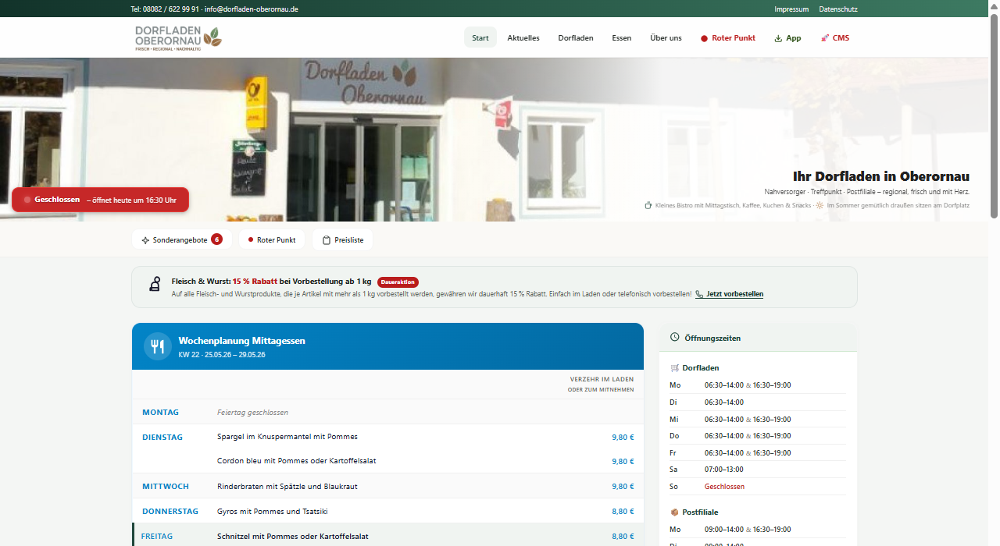
Abb. 1: Die Dorfladen-Homepage in der übersichtlichen Desktop-Ansicht
Mobile-Ansicht (Smartphones & Tablets)
Da über 85% der täglichen Zugriffe von mobilen Endgeräten erfolgen, wurde die mobile Ansicht extrem optimiert:
Headerbar mit Hamburger-Menü: Ein platzsparendes Kopfelement zeigt den Ladenamen und öffnet über das Symbol mit den drei Strichen ☰ (Hamburger-Menü) eine ausziehbare Navigationsleiste (Navigation Drawer).
News-Ticker: Ganz oben läuft ein dezent schiebendes Band mit den aktuellsten Schlagzeilen durchs Bild.
Quick-Actions: Auf der Startseite befinden sich große, fingerfreundliche Kacheln, die Popups öffnen – ideal für die Einhandbedienung unterwegs.
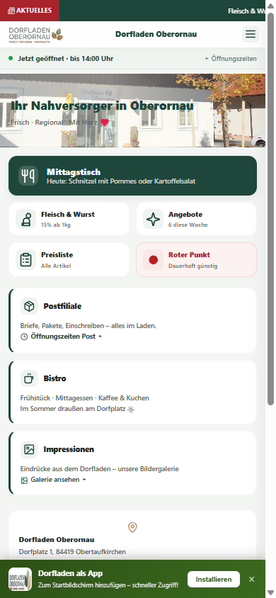
Abb. 2: Die für Mobilgeräte optimierte PWA-Ansicht mit Newsticker
3. Menüstruktur & Unterseiten der Homepage
Die Homepage des Dorfladens Oberornau bietet eine klare und gut strukturierte Navigation, um Besuchern, Genossen und Kunden schnellen Zugriff auf alle relevanten Informationen zu ermöglichen.
Das Navigationskonzept: Desktop vs. Mobile
Die Navigation auf der Homepage unterscheidet sich grundlegend zwischen Desktop- und Mobile-Endgeräten, um für beide Bildschirmgrößen das bestmögliche Nutzererlebnis zu bieten:
💻 Desktop-Version (Computer, Laptop & große Tablets)
Aussehen (Look): Eine feste, vertikale Sidebar am linken Bildschirmrand. Sie zeigt oben das Dorfladen-Logo und darunter die Navigationsschaltflächen mitsamt eingerückten Submenüs unter „Genossenschaft“ und „Kulinarisches“.
Funktionsweise (Function): Das Menü bleibt beim Scrollen permanent links im Bild fixiert (sticky), so dass die Navigation zu jeder Zeit sofort erreichbar ist.
Ausführung (Execution): Ein einfacher Linksklick auf einen Menüpunkt wechselt augenblicklich zur entsprechenden Seite.
Angezeigte Inhalte (Displayed Content): Der Hauptinhalt wird rechts daneben großflächig dargestellt. Alle Menüpunkte und ihre Unterseiten sind direkt sichtbar, ohne dass vorher ein Menü geöffnet werden muss.
📱 Mobile-Version (Smartphones & schmale Tablets)
Aussehen (Look): Am oberen Rand befindet sich eine schlanke, grüne Header-Bar mit dem Laden-Schriftzug und dem Hamburger-Symbol (drei waagerechte Striche ☰) in der linken Ecke. Die Navigation selbst ist unsichtbar.
Funktionsweise (Function): Das Menü ist in einem platzsparenden, linksseitig ausziehbaren Seitenmenü (Navigation Drawer) verborgen, um den gesamten Bildschirm für den eigentlichen Inhalt freizuhalten.
Ausführung (Execution): Der Anwender tippt auf das Hamburger-Symbol ☰ (oder wischt vom linken Bildschirmrand nach rechts). Daraufhin schiebt sich das Menü elegant über den Inhalt. Ein Fingertipp auf eine Seite lädt den Inhalt und schließt das Menü vollkommen automatisch.
Angezeigte Inhalte (Displayed Content): Im ausgezogenen Drawer sind alle Hauptmenüpunkte sowie ausklappbare Akkordeon-Untermenüs für die Genossenschafts-Seiten sauber vertikal untereinander gelistet.
Das Hauptmenü (Kernseiten)
Das Hauptmenü führt zu den am häufigsten genutzten Informationsbereichen:
Startseite (index.html):
Die Schaltzentrale für Besucher. Sie zeigt sofort den aktuellen Öffnungsstatus (Grün/Rot) an, lässt den Newsticker mit den neuesten Eilnachrichten durchlaufen und bietet direkten Zugriff auf die Schnellwahl-Kacheln (Mittagstisch, Angebote, Roter Punkt).
Öffnungszeiten (oeffnungszeiten.html):
Hier sind alle regulären Ladenöffnungszeiten von Montag bis Sonntag übersichtlich in einer großen Wochentabelle aufgeführt, ergänzt durch eventuelle Feiertagsregelungen oder Sonder-Öffnungszeiten.
Aktuelles (aktuelles.html):
Das digitale schwarze Brett unseres Dorfes. Hier erscheinen alle wichtigen Neuigkeiten chronologisch sortiert mit ansprechenden Bildern und ausführlichen Texten.
Sortiment & Preise (sortiment.html):
Ein moderner, durchsuchbarer Produktkatalog. Kunden können gezielt nach Produkten suchen (z.B. „Milch“ eintippen) oder Kategorien filtern (Tiefkühl, Obst & Gemüse, etc.), um Preise und Füllmengen vorab zu prüfen.
Impressionen (bilder.html):
Eine interaktive Galerie mit hochauflösenden Fotos unseres Dorfladens. Sie zeigt das Geschäft von innen, die Frischetheke, das Team und das lebendige Miteinander vor Ort.
Das Genossenschafts-Untermenü (Submenüs)
Da der Dorfladen ein genossenschaftlich getragenes Gemeinschaftsprojekt der Bürger ist, widmet sich ein eigener Bereich der Organisation und den Beteiligungsmöglichkeiten:
Geschäftsführung (geschaeftsfuehrung.html):
Stellt die Personen vor, die den Dorfladen ehrenamtlich und hauptberuflich leiten. Es beschreibt deren Aufgabenbereiche, Verantwortungen und Kontaktdaten.
Beirat (beirat.html):
Zeigt die Mitglieder des Beirats, die die Geschäftsführung beratend unterstützen und die Interessen der Genossen im täglichen Ladenbetrieb vertreten.
Stille Gesellschafter (stille-gesellschafter.html):
Erklärt detailliert das Beteiligungsmodell für stille Gesellschafter. Bürger erfahren hier, wie sie Anteile zeichnen können, wie das Genossenschaftskapital verwendet wird und welche Rechte und Pflichten damit verbunden sind.
Konzept & Entstehung (konzept.html):
Die spannende Gründungsgeschichte unseres Dorfladens – von der ersten Bürgerversammlung über die Planungsphasen bis hin zur Eröffnung. Zudem wird hier das dahinterstehende Nahversorgungskonzept erläutert.
Kulinarische Sonderseiten
Essen im Dorfladen (essen-im-dorfladen.html):
Beschreibt unser gemütliches Bistro-Café im Herzen des Ladens. Besucher erfahren alles über den Mittagstisch, die angebotenen Kaffeespezialitäten, Kuchen und Snack-Möglichkeiten sowie Vorbestellungsoptionen für Mittagessen.
Roter Punkt (roter-punkt.html):
Unter dem Slogan „Roter Punkt“ werden Grundnahrungsmittel und Drogerieartikel des täglichen Bedarfs dauerhaft extrem günstig angeboten, um eine bezahlbare Grundversorgung im ländlichen Raum abzusichern. Diese Seite listet all diese Eckartikel und deren Preise auf.
4. Echtzeit-Öffnungszeiten & Statusanzeige
Das Herzstück der Startseite ist das dynamische Öffnungszeiten-System.
Die Statusleiste: Ein farbiger Punkt signalisiert auf einen Blick den aktuellen Zustand:
🟢 GEÖFFNET: Der Laden ist geöffnet. Zusätzlich erscheint eine Anzeige wie: „Schließt um 18:00 Uhr • Schließt in 2 Stunden“.
🔴 GESCHLOSSEN: Das Geschäft hat geschlossen. Es erscheint z. B.: „Öffnet morgen um 07:30 Uhr“.
Interaktive Klick-Funktion: Tippt der Besucher auf die Statusleiste, öffnet sich ein übersichtliches Popup-Fenster mit der detaillierten Wochentabelle aller regulären Öffnungszeiten von Montag bis Sonntag.
Die Zeitzonen- und Feiertagsberechnungen basieren vollautomatisch auf der lokalen Systemzeit des Dorfladens Oberornau, um Fehlberechnungen bei Zeitumstellungen zuverlässig zu vermeiden.
🗓️ Automatische Bayern-Feiertagsberechnung
Die Statusanzeige berücksichtigt vollautomatisch alle bayerischen gesetzlichen Feiertage – ohne manuelle Pflege! Das System berechnet die beweglichen Feiertage (Ostern, Pfingsten, Fronleichnam usw.) mathematisch korrekt aus dem aktuellen Kalenderjahr. Folgende Feiertage werden erkannt:
Neujahr, Heilige Drei Könige (6.1.), Karfreitag, Ostersonntag & -montag
Tag der Arbeit (1.5.), Christi Himmelfahrt, Pfingstsonntag & -montag, Fronleichnam
Mariä Himmelfahrt (15.8.), Tag der Deutschen Einheit (3.10.), Allerheiligen (1.11.)
1. und 2. Weihnachtstag (25./26.12.)
An Feiertagen zeigt die Statusleiste ● Geschlossen – Feiertag an, anstatt wie sonst den nächsten Öffnungszeitpunkt zu berechnen.
5. Der Aktuelles-Ticker & News-Archiv
Der News-Bereich hält Kunden über Neuigkeiten auf dem Laufenden.
Der Laufband-Ticker (Scrolling Ticker): Wenn Neuigkeiten als „Laufband" markiert sind, erscheint oberhalb des Startseiten-Heroes ein animiertes Laufband. Die Schlagzeilen gleiten kontinuierlich von rechts nach links. Ein Klick auf einen Titel öffnet sofort den vollständigen Artikel als Overlay – ohne Seitenwechsel.
News-Overlay (Artikel-Vollansicht): Ein Klick auf einen Ticker-Eintrag öffnet einen eleganten, halbtransparenten Overlay-Dialog mit dem vollständigen Artikel inkl. Datum, Titel und formatiertem Inhalt. Ein Klick außerhalb des Dialogs oder auf das ×-Symbol schließt ihn. Unten befindet sich ein Link „Alle Neuigkeiten →" zur vollständigen Archivseite.
News-Karten auf der Startseite: Die letzten fünf Beiträge werden als Karten mit Datum, Titel und Kurztext dargestellt. Hat ein Beitrag einen längeren Inhalt, erscheint eine „Weiterlesen"-Schaltfläche, die den vollständigen Text direkt in der Karte aufklappt – kein extra Seitenaufruf nötig.
News-Archiv (/aktuelles.html): Alle Beiträge chronologisch sortiert. Jeder Post verfügt über Datum und ausführlichen Textkörper.
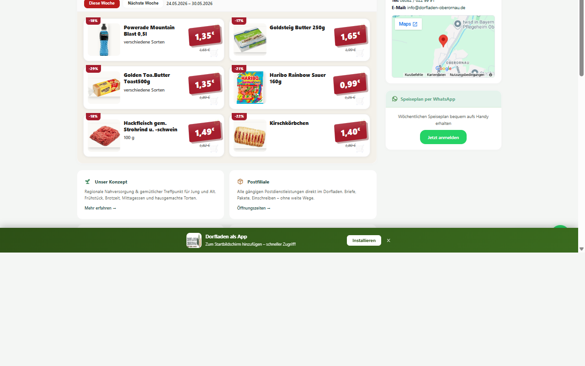
Abb.: News-Karten auf der Startseite mit Datum, Titel, Kurztext und „Weiterlesen"-Schaltfläche
6. Die Schnellwahl-Aktionen (Popups & Bottom-Sheets)
Auf dem Smartphone-Display müssen die wichtigsten Infos mit nur einem Daumen-Tipp erreichbar sein. Dafür wurden die Schnellwahl-Aktionen entwickelt. Sie sind als moderne Bottom-Sheets (Einschub-Karten von unten) konzipiert, die über herausragende native Steuerungs-Gesten verfügen:
📱 High-End-Gestensteuerung auf Mobilgeräten:
Wischgeste nach unten (Swipe-down-to-dismiss): Jedes mobile Popup besitzt oben einen schmalen, abgerundeten **Haltegriff (Handlebar)**. Sie können das Popup ganz natürlich mit dem Daumen am Griff packen und nach unten ziehen, um es zu schließen. Die Abdunkelung des Hintergrunds verblasst dabei stufenlos mitsamt Ihrer Zugbewegung. Bei über 80 Pixeln Zugweg schließt sich das Fenster komplett; andernfalls federt es elastisch (Bounce-Effekt) in seine Ausgangsposition zurück.
Physische Zurück-Taste (Android Back-Gesture Integration): PWAs schlossen sich bisher beim Drücken der physischen Zurück-Taste des Handys unschön komplett. Unsere Seite integriert einen intelligenten **History-Guard**! Das Öffnen eines Popups erzeugt eine unsichtbare Zwischenstation im Browserverlauf. Wischen Sie auf Ihrem Handy „Zurück“, wird nur das geöffnete Popup geschlossen, und Sie bleiben ohne App-Absturz sicher auf der Startseite!
🍽️ Mittagstisch (Wochenplan)
Öffnet den aktuellen Mittagstisch-Plan als elegantes, mobiles Popup-Fenster.
Es zeigt den Plan wochentagsweise an (z. B. Montag: Spargel im Knuspermantel mit Pommes • 9,80 €).
Schnittstellen: Über den Button „🖨️ Drucken“ kann das Dokument direkt an einen heimischen AirPrint- oder Google-Print-Drucker gesendet werden. Der Button „Teilen“ öffnet WhatsApp, um das Gericht des Tages mit Freunden oder Kollegen zu teilen.
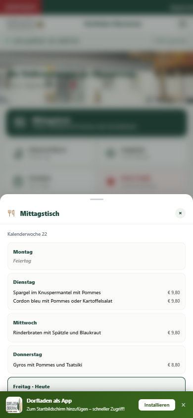
Abb. 3: Das Mittagstisch-Popup auf dem Smartphone mit Druck- und Teilfunktion
🏷️ Angebote (Aktions-Flyer)
Dieses Popup lädt die aktuellen Wochen-Sonderangebote direkt auf das Display. Jedes Produkt wird als bildstarke Karte mit rotem Preis-Aktionsschild (z. B. 1,35 € statt 1,65 €) und dem berechneten Rabatt (z. B. -18%) dargestellt.
Wochenumschalter (Diese Woche / Nächste Woche): Über der Angebotsliste befinden sich zwei Schaltflächen Diese Woche und Nächste Woche. So können Kunden bereits vorab die Aktionen der kommenden Woche einsehen und ihre Einkäufe planen. Darunter erscheint der genaue Zeitraum (z. B. 02.06. – 08.06.).
Produktbild automatisch nachgeladen: Für Aktionsartikel mit Artikelnummer werden Produktbilder automatisch aus der Dataverse-Datenbank nachgeladen und als visuelle Kacheln angezeigt. Ist kein Bild vorhanden, bleibt der Bildplatzhalter dezent leer.
Rabatt-Badge: Bei Artikeln mit bekanntem Statt-Preis wird automatisch der prozentuale Rabatt berechnet und als farbiges Abzeichen (z. B. -18%) oben links auf der Karte angezeigt.
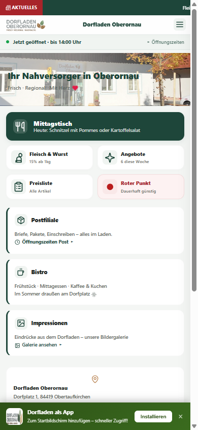
Abb. 4: Das wöchentliche Sonderangebote-Popup auf dem Smartphone
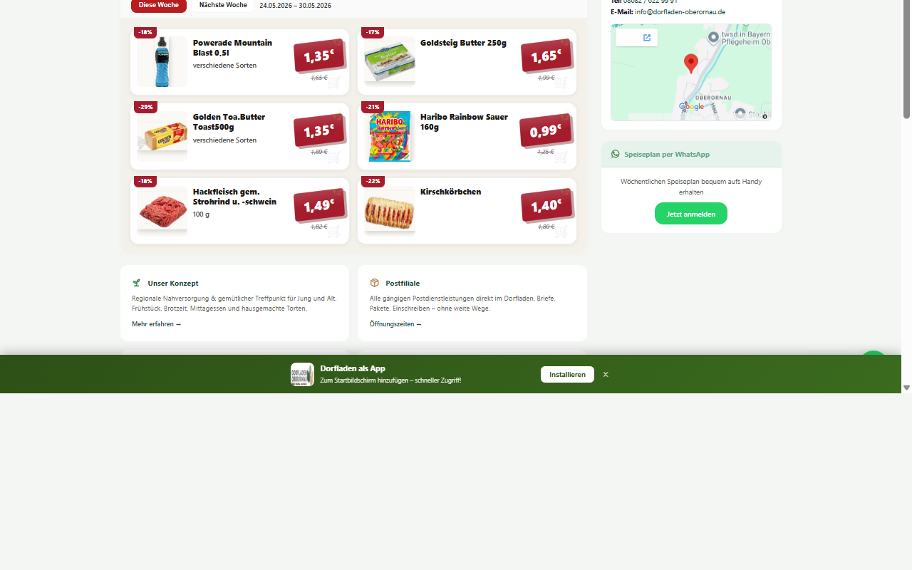
Abb.: Angebote-Kacheln auf der Startseite mit Wochenumschalter „Diese Woche / Nächste Woche"
🔴 Roter Punkt (Dauertiefpreise zur sozialen Nahversorgung)
Die Rubrik „Roter Punkt“ (erreichbar über die rote Kachel auf der Startseite, die Menüleiste oder direkt unter /roter-punkt.html) ist ein zentraler Eckpfeiler unseres genossenschaftlichen Versorgungsauftrags. Hier listen wir Grundnahrungsmittel, Hygiene- und Haushaltsartikel des täglichen Bedarfs, die dauerhaft extrem günstig – oft auf Discounter-Niveau oder knapp über Selbstkosten – angeboten werden, um allen Bürgern im ländlichen Raum eine preisgünstige Grundversorgung zu sichern.
Die 3 Kernfunktionen der interaktiven Liste
Die Rote-Punkt-Seite arbeitet mit einer hochmodernen, live-synchronisierten Client-Schnittstelle, die folgende Steuerungs- und Informationsfunktionen bietet:
📂 1. Interaktive Akkordeon-Gruppierung nach Warengruppen
Um die Vielzahl an Dauertiefpreis-Artikeln übersichtlich zu gliedern, sind alle Produkte nach ihren Warengruppen (z. B. Teigwaren, Milchprodukte, Hygieneartikel) sortiert.
Aussehen (Look): Jede Warengruppe bildet eine graue, abgerundete Kopfzeile. Diese zeigt links den Kategorienamen, in der Mitte ein rotes Abzeichen mit der Artikelanzahl (z. B. 12 Artikel), rechts die durchschnittliche Ersparnis (z. B. im Schnitt -23%) und ganz außen ein Pfeilsymbol ▼.
Funktionsweise & Ausführung (Function & Execution): Die Liste startet standardmäßig im eingeklappten Zustand, um scrollfreundlich zu bleiben. Ein einfacher Klick oder Fingertipp auf die Gruppen-Kopfzeile klappt die Tabelle mit den Produkten weich nach unten auf. Das Pfeilsymbol wechselt dabei dynamisch auf ▲.
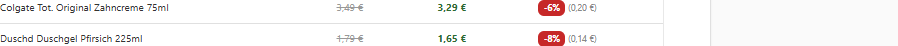
⚡ 2. Echtzeit-Volltextsuche mit Auto-Expand (Suchfilter)
Ein leistungsstarkes Suchfeld am Kopf der Seite ermöglicht die sofortige Filterung aller gelisteten Artikel.
Ausführung (Execution): Tippen Sie einfach einen Suchbegriff (z. B. Zuck oder Nud) in die Suchleiste ein.
Intelligente Auto-Ausklappung (Auto-Expand): Sobald Sie tippen, werden alle Warengruppen, die einen passenden Treffer enthalten, **vollkommen automatisch im Vollbild aufgeklappt**, damit Sie die Suchergebnisse sofort im Blick haben, ohne mühsam alle Akkordeons einzeln anklicken zu müssen!
Dynamische Badge-Aktualisierung: Die rote Badge mit der Artikelanzahl im Akkordeon-Kopf ändert sich in Echtzeit und zeigt live nur noch die Anzahl der Treffer an (z. B. von *12 Artikel* auf *2 Artikel*).
No-Results-Logik: Sollte kein Artikel auf den Suchbegriff passen, wird eine dezente Meldung „Kein Artikel gefunden“ eingeblendet.
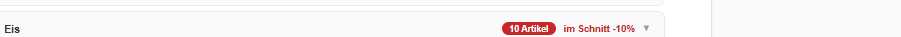
💰 3. Transparenter Preisvergleich (Unser Preis vs. UVP)
Jedes Produkt in der Tabelle bietet Kunden einen glasklaren, ehrlichen Preisvergleich auf einen Blick.
UVP-Anzeige (Durchgestrichen): Zeigt die unverbindliche Preisempfehlung des Herstellers an (grau und durchgestrichen, z. B. 1,89 €).
Unser Preis (Fett Grün): Zeigt den dauerhaft reduzierten Dorfladen-Verkaufspreis an (z. B. 1,39 €).
Prozentualer Rabatt: Ein auffälliges rotes Abzeichen am rechten Rand zeigt die Ersparnis in Prozent an (z. B. -26%).
Absolute Ersparnis: Direkt neben dem Rabatt-Badge wird zusätzlich der exakte Euro-Betrag angezeigt, den Sie einsparen (z. B. (0,50 €)).
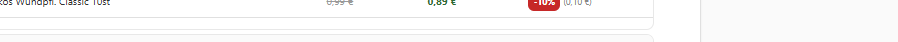
Datenqualität & Filtermechanismus
Um Datenübertragungsfehler aus der Microsoft Dataverse Warenwirtschaft (ERP) auszuschließen, ist das System mit einem automatischen Filtermechanismus ausgestattet: Rabatte unter 5% (keine echte Ersparnis) oder über 70% (Anomalie/Eingabefehler) werden automatisch ausgeblendet, so dass nur seriöse Dauertiefpreise dargestellt werden.
7. Interaktive Sortiments- und Preisliste
Die digitale Preisliste (erreichbar über die Sidebar-Navigation am PC, das Hamburger-Menü am Smartphone oder direkt über die Kachel „Sortiment & Preise“ auf der Startseite) ist ein interaktiver Produktkatalog des gesamten Dorfladens. Sie dient Kunden als tagesaktuelle Informationsquelle zur Einkaufsplanung.
Funktionsweise & interaktive Steuerung
Der Katalog ist mit hochentwickelten Filter- und Suchfunktionen ausgestattet, die komplett lokal im Browser ausgeführt werden. Dadurch reagiert die Seite blitzschnell und ohne jegliche Ladeverzögerung.
🔍 1. Dynamische Echtzeit-Textsuche (Filterfeld)
Das Suchfeld befindet sich prominent ganz oben auf der Sortimentsseite. Es ermöglicht das sofortige Auffinden von bestimmten Artikeln aus Hunderten von Einträgen.
Ausführung: Klicken oder tippen Sie in das Eingabefeld „Produkt suchen...“ und beginnen Sie mit der Eingabe (z. B. Butt oder Apf).
Ablauf im Hintergrund: Auf jeden Tastendruck (Keyup-Event) filtert ein optimierter Suchalgorithmus die Produktliste sofort. Es ist kein Klick auf eine Lupe und kein Drücken der Eingabetaste erforderlich.
Inhaltsanzeige: Alle nicht zutreffenden Produktzeilen werden weich ausgeblendet. Nur Zeilen, bei denen der Name den eingegebenen Begriff enthält, bleiben sichtbar. Wird das Suchfeld geleert, erscheint augenblicklich wieder das vollständige Sortiment.
📂 2. Akkordeon-Warengruppen mit Live-Zähler
Das gesamte Sortiment ist in Warengruppen (z. B. Backwaren, Molkereiprodukte, Drogerie) aufgeteilt. Jede Gruppe wird als klickbarer Akkordeon-Kopf angezeigt.
Aussehen: Der Kopf zeigt den Gruppenname, die Artikelanzahl sowie einen Pfeil ▼. Beim Klick öffnet/schließt sich die Produkttabelle, der Pfeil wechselt auf ▲.
Live-Zähler: Sobald eine Suche oder ein Filter aktiv ist, aktualisiert sich die Zahl in der Kopfzeile sofort und zeigt nur noch die Anzahl der sichtbaren Treffer an – nicht mehr die Gesamtmenge.
Auto-Aufklappen bei Suche: Wenn Sie im Suchfeld tippen, klappen alle Gruppen mit passenden Treffern automatisch auf. Gruppen ohne Treffer werden vollständig ausgeblendet.
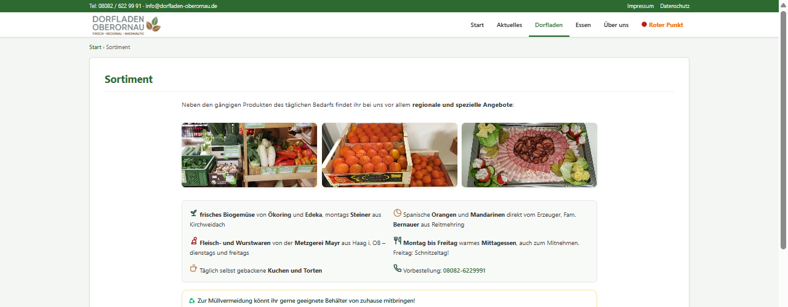
Abb.: Eine geöffnete Warengruppe – Tabellenzeilen mit Preis, UVP-Vergleich und Rabatt-Badge
📊 3. Strukturierte Tabellen- & Zeilenanzeige
Jedes Produkt wird als separate Zeile innerhalb seiner Abteilung dargestellt. Die Darstellung ist tabellarisch aufgebaut, um maximale Übersichtlichkeit zu garantieren.
Spalte / Inhalt
Bedeutung & Anzeige
🛒 Produktname
Die genaue, verständliche Artikelbezeichnung (z. B. Frische Vollmilch 3,5%).
📏 Füllmenge / Einheit
Die Packungsgröße oder Verkaufseinheit (z. B. 1,0 Liter, 500 g Becher oder 1 Stück).
🏷️ Preis
Der exakte, verbindliche Bruttopreis mitsamt grünem Preisschild-Hintergrund (z. B. 1,49 €).
🏷️ 4. Schnellfilter: Roter Punkt & Sonderangebote
Direkt unter der Preislisten-Überschrift befinden sich zwei Filterknöpfe, die das gesamte Sortiment blitzschnell auf Sparangebote reduzieren:
🔴 Günstiger als UVP (Anzahl): Ein Klick zeigt ausschließlich alle Artikel, deren Verkaufspreis unter der unverbindlichen Preisempfehlung des Herstellers liegt. Die Zahl in der Klammer zeigt die aktuelle Anzahl solcher Artikel (z. B. 207). Alle passenden Warengruppen klappen sich automatisch auf.
★ Sonderangebot (Anzahl): Filtert auf alle aktuell als Wochenaktion ausgezeichneten Artikel – mit reduziertem Aktionspreis und durchgestrichenem Statt-Preis.
Kombinierbar mit Suche: Filter und Freitextsuche arbeiten gleichzeitig. Z. B. „Bio" eintippen bei aktivem Roter-Punkt-Filter zeigt nur Bio-Artikel unterhalb der UVP.
Deaktivieren: Erneuter Klick auf den aktiven Filterknopf hebt ihn wieder auf und zeigt das vollständige Sortiment.
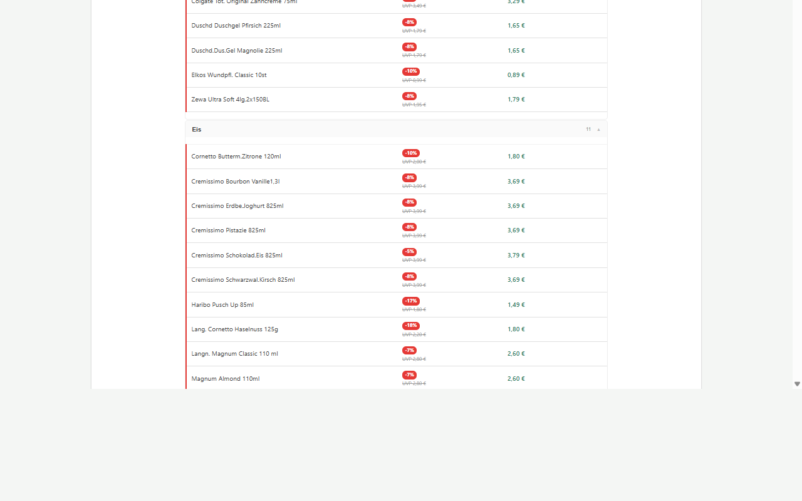
Abb.: Aktiver Roter-Punkt-Filter – nur UVP-günstigere Artikel mit auto-ausgeklappten Gruppen und Live-Zähler
📷 5. Barcode-Scanner (EAN-Suche per Smartphone-Kamera)
Rechts neben dem Suchfeld befindet sich ein kleines Kamera-Symbol 📷. Dahinter verbirgt sich ein vollwertiger Barcode-Scanner direkt im Browser – ohne App-Installation!
Ausführung: Tippen Sie auf das Kamera-Symbol 📷. Der Browser fragt einmalig nach der Kamera-Erlaubnis. Nach Bestätigung öffnet sich ein Live-Kamera-Sucher direkt auf der Seite.
Ablauf: Halten Sie die Kamera auf den EAN-Strichcode eines Produkts (z. B. Joghurtbecher, Nudelpackung). Das System scannt mit 15 Bildern/Sekunde und erkennt EAN-13, EAN-8, UPC-A, UPC-E und Code-128 Codes. Nur Scans mit über 85% Erkennungssicherheit werden ausgewertet – das verhindert Fehllesungen.
Ergebnis: Sobald ein Code erkannt wird, schließt sich der Scanner automatisch. Das Ergebnis erscheint sofort darunter: Produktname, Warengruppe, aktueller Preis, und falls vorhanden Rabatt-Badge und UVP-Vergleich.
Fallback-API: Findet die Seite einen EAN-Code nicht im angezeigten Sortiment, fragt sie automatisch die Cloud-Datenbank ab und zeigt das Ergebnis trotzdem an.
Scanner schließen: Klick auf × Scanner schließen beendet die Kamera sofort.
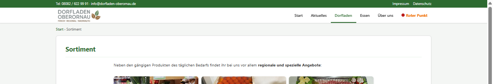
Abb.: Die Suchleiste der Preisliste – Suchfeld, Filter-Buttons und das Barcode-Scanner-Symbol 📷 rechts außen
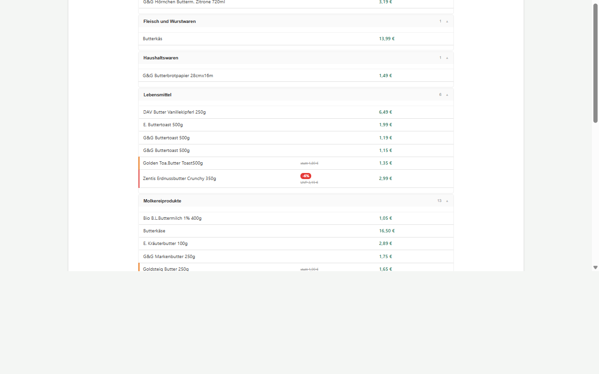
Abb.: Echtzeit-Suche nach „Butter" – passende Gruppen klappen automatisch auf, Artikelzähler aktualisieren sich live
� Die Preisliste in der Desktop-Version
Aussehen (Look): Große, breite und glasklar strukturierte Tabelle. Jede Abteilung bildet einen eigenen Block mit einer dunkelgrünen Überschrift.
Funktionen & Ausführung (Functions & Execution): Die Kategorie-Schaltflächen oben sind nebeneinander aufgereiht. Ein Mausklick löst einen flüssigen Bildlauf direkt zum entsprechenden Block aus. Die Textsuche ist eine breite, markante Eingabezeile.
Angezeigte Inhalte (Displayed Content): Der Produktname, die exakte Füllmenge und der Preis stehen sauber nebeneinander in separaten, hochauflösenden Tabellenspalten. Die Preise sind mitsamt grüner Plaketten-Hintergründe hervorgehoben.
📱 Die Preisliste in der Mobile-Version (Smartphone)
Aussehen (Look): Platzsparendes, kompaktes Ein-Spalten-Listenlayout. Die Zeilen gehen fließend ineinander über, um horizontales Scrollen vollständig zu vermeiden.
Funktionen & Ausführung (Functions & Execution): Die Kategorie-Schnellwahlknöpfe über der Liste sind als **horizontales, swipebares Karussell** angeordnet. Der Nutzer kann die Leiste einfach mit dem Daumen nach links/rechts schieben und Kategorien anwählen. Die Suche nimmt die gesamte Breite ein und blendet Tastaturen auf Mobilgeräten fehlerfrei ein.
Angezeigte Inhalte (Displayed Content): Die Spalten werden vertikal gestapelt: Der Produktname steht oben in fetter Schrift. Direkt darunter steht eingerückt und kleiner die Füllmenge (z. B. 500g Becher) in dezentem Grau. Der Preis steht rechtsbündig in einer für die Daumenbedienung vergrößerten, auffälligen grünen Preisbox.
Datenpflege & Echtzeit-Aktualisierung
Die Preisliste ist direkt mit dem Cloud-Datenbestand des Dorfladens verknüpft:
Kein manueller Export nötig: Jede Änderung, die das Ladenpersonal im CMS im Reiter „Sortiment“ vornimmt und speichert, aktualisiert sofort die zentrale Microsoft Dataverse Cloud.
Echtzeit-Synchronisation: Die Homepage liest diese Daten beim Laden der Seite direkt als JSON-Datenstruktur ein. Kunden sehen somit immer haargenau dieselben Preise wie an den physischen Ladenregalen.
8. Foto-Galerie & Impressionen (mit Lightbox)
Die Seite Impressionen (/bilder.html) zeigt eine lebendige Bildergalerie aus dem Dorfladen-Alltag. Sie ist mit zwei hochwertigen Funktionen ausgestattet:
🗂️ Kategorie-Filter
Wenn Bilder verschiedenen Kategorien (z. B. Laden, Mittagstisch, Veranstaltungen) zugeordnet sind, erscheint oberhalb der Galerie eine Reihe von Filter-Schaltflächen.
Ausführung: Klicken/tippen Sie auf eine Kategorie-Schaltfläche (z. B. Mittagstisch (12)). Sofort werden nur noch die Bilder dieser Kategorie angezeigt. Die Zahl in Klammern zeigt immer die genaue Anzahl der Bilder je Kategorie.
Alle: Mit der Schaltfläche Alle sehen Sie wieder das vollständige Bildarchiv. Die aktive Kategorie ist optisch hervorgehoben.
Gibt es nur eine Kategorie oder weniger als zwei Kategorien, werden die Filter-Tabs automatisch ausgeblendet.
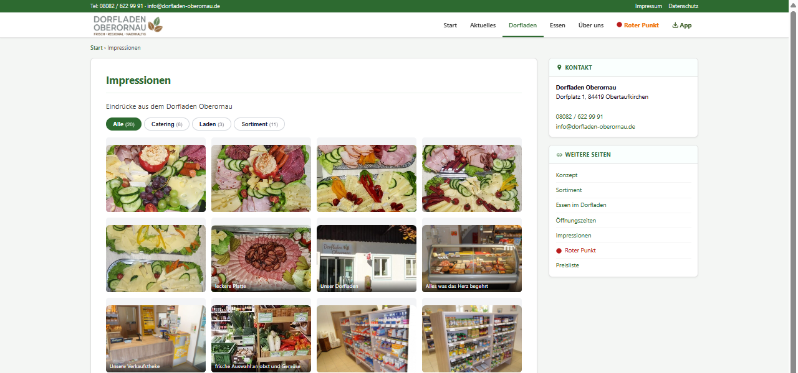
Abb.: Die Impressionen-Galerie mit Kategorie-Filter-Tabs oben und Bildraster darunter
🔍 Lightbox (Vollbild-Bildbetrachtung)
Ein Klick auf ein beliebiges Bild in der Galerie öffnet es als elegante Vollbild-Lightbox.
Ausführung: Klicken oder tippen Sie auf ein Bild.
Navigation: Mit den Pfeiltasten ← / → der Tastatur (Desktop) oder den Pfeil-Schaltflächen in der Lightbox können Sie bequem durch alle Bilder der aktuellen Kategorie blättern. Am Ende der Galerie springt die Ansicht automatisch zum ersten Bild zurück.
Bildunterschrift: Wenn für ein Bild eine Beschreibung hinterlegt ist, erscheint sie als halbtransparenter Text am unteren Bildrand.
Schließen: Klicken Sie außerhalb des Bilds, auf das ×-Symbol oder drücken Sie die Escape-Taste.
Lazy Loading: Bilder werden erst geladen wenn sie im sichtbaren Bereich erscheinen – das hält die Seite auch bei vielen Fotos schnell.
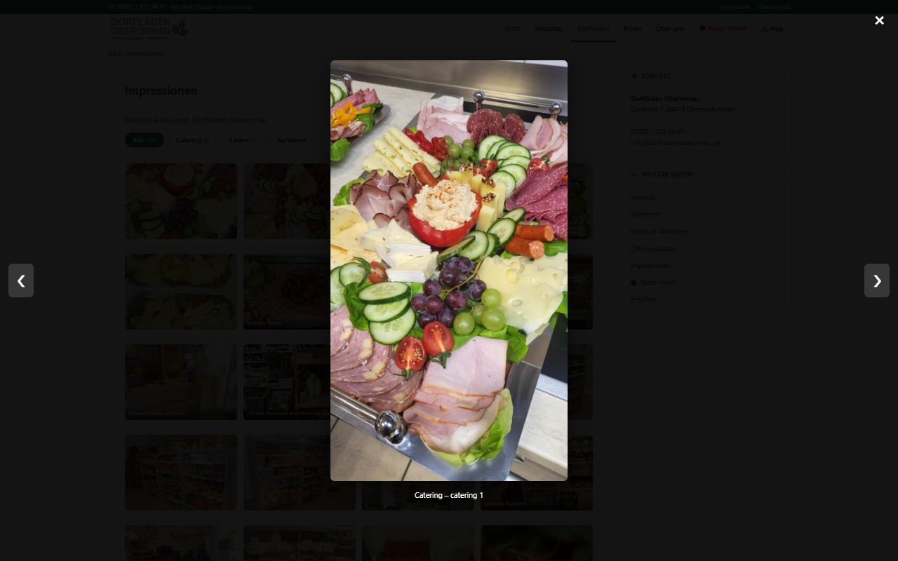
Abb.: Lightbox-Vollansicht eines Galeriebildes mit Navigationspfeilen
9. PWA: Die Homepage als App auf dem Smartphone installieren
Da die Dorfladen-Homepage eine Progressive Web App ist, können Sie diese wie eine vollwertige App auf Ihrem Mobiltelefon installieren – ohne den Google Play Store oder Apple App Store aufrufen zu müssen!
Vorteile der Installation
Ein schickes Dorfladen-App-Icon erscheint direkt auf Ihrem Startbildschirm.
Die Seite öffnet sich im Vollbildmodus (ohne die störende Adresszeile des Webbrowsers).
Die App lädt durch fortschrittliche Zwischenspeicherung (Caching) auch bei sehr schlechter Internetverbindung im ländlichen Raum blitzschnell.
Anleitung für Android (Samsung, Xiaomi, Google Pixel, etc.)
Öffnen Sie die Homepage im Google Chrome Browser.
In der Regel erscheint am unteren Bildschirmrand automatisch ein Banner: „Dorfladen zum Startbildschirm hinzufügen“. Tippen Sie darauf.
Sollte das Banner nicht erscheinen: Öffnen Sie das Menü des Browsers (die drei Punkte ⋮ oben rechts) und wählen Sie „App installieren“ oder „Zum Startbildschirm hinzufügen“.
Anleitung für iOS (Apple iPhone & iPad)
Öffnen Sie die Homepage im integrierten Safari Webbrowser.
Tippen Sie in der unteren Funktionsleiste auf das „Teilen“-Symbol (ein Viereck mit einem Pfeil, der nach oben zeigt: 📤).
Scrollen Sie im sich öffnenden Menü nach unten und tippen Sie auf den Eintrag: „Zum Home-Bildschirm“.
Bestätigen Sie den Namen mit „Dorfladen“ und tippen Sie oben rechts auf „Hinzufügen“.
Sobald Sie die App installiert haben, verhält sie sich exakt wie eine klassische App aus dem App-Store, benötigt aber nahezu keinen Speicherplatz auf Ihrem Telefon!
10. Push-Benachrichtigungen aktivieren
Wenn Sie immer sofort informiert werden möchten, sobald der Mittagstisch für die neue Woche bereitsteht oder frische Sonderangebote eintreffen, können Sie die Push-Benachrichtigungen aktivieren.
Aktivierungsschritte
Öffnen Sie das Menü (Hamburger-Menü) auf dem Smartphone oder betrachten Sie das Desktop-Menü.
Klicken Sie auf den Button: „🔔 Benachrichtigungen aktivieren“.
Es öffnet sich ein systemseitiges Browserfenster, das Sie fragt: „kind-pebble-... möchte Ihnen Benachrichtigungen senden“. Wählen Sie unbedingt „Erlauben“.
Der Button im Menü ändert sich daraufhin zu: „🔔 Benachrichtigungen aktiv“ (oder „Deaktivieren“). Sie sind nun erfolgreich angemeldet!
Fehlerbehebung bei Blockierung
Sollten Sie versehentlich einmal auf „Blockieren“ geklickt haben, sendet der Browser keine Benachrichtigungen mehr. Um dies zu korrigieren:
Am Smartphone: Tippen Sie auf das Schloss-Symbol 🔒 links neben der Internetadresse (URL) im Browser. Wählen Sie „Berechtigungen“ und setzen Sie den Schalter bei „Benachrichtigungen“ wieder auf „Zulassen“.
Am PC: Klicken Sie ebenfalls auf das Schloss-Symbol in der Adresszeile und schalten Sie die Berechtigung für Benachrichtigungen wieder ein.
11. Impressum, Datenschutz & Cookie-Richtlinien
Als Genossenschaft legt der Dorfladen Oberornau höchsten Wert auf Datensparsamkeit und Rechtskonformität.
Rechtssicherheit: Impressum (/impressum.html) und Datenschutzerklärung (/datenschutzerklaerung.html) sind jederzeit mit einem Klick erreichbar.
Anonymes Push: Für den Empfang von Push-Benachrichtigungen werden keinerlei persönliche Daten wie E-Mail-Adressen, Namen oder Standorte erfasst. Das System registriert lediglich eine anonyme, kryptografische Geräte-ID des Webbrowsers.
Cookie-Banner: Die Seite nutzt ausschließlich technisch notwendige Cookies, um Ihre Einstellungen (wie das gewählte Design-Template oder den Push-Zustand) lokal auf Ihrem Gerät zu speichern. Es findet kein Tracking durch Drittanbieter statt.
12. Häufige Fragen & Problemlösungen (FAQ)
Die Mittagstisch-Preise auf der Seite weichen von den Flyern ab – woran liegt das?
Das System synchronisiert sich in Echtzeit. Sollte das Ladenpersonal gerade Änderungen im CMS vornehmen, laden Sie die Seite einfach kurz neu (Zieh-Geste nach unten am Smartphone oder Taste F5 am PC), um den allerneuesten, verbindlichen Stand zu erhalten.
Funktioniert die PWA auch ohne Internetverbindung?
Ja, teilweise! Bereits geladene Seiten, wie die regulären Öffnungszeiten oder die Preisliste, können Sie dank des integrierten Service Workers auch dann aufrufen, wenn Sie im Funkloch stehen. Für frische Wochenpläne oder Neuigkeiten ist jedoch eine kurze Internetverbindung zur Synchronisation erforderlich.
Kostet der Push-Service Geld?
Nein. Die Benachrichtigungen sind ein vollkommen kostenloser Service der Genossenschaft Dorfladen Oberornau für alle Bürger und Kunden.
Offizielles Homepage-Anwenderhandbuch für Besucher • Version 1.3 • Dorfladen Oberornau Genossenschaft
Besuchen Sie uns online unter: https://kind-pebble-072605b03.7.azurestaticapps.net